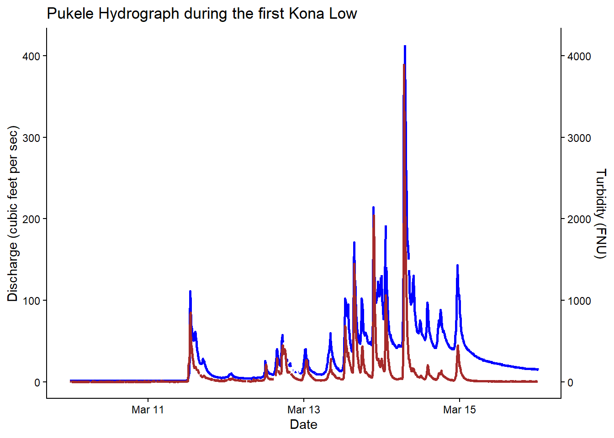
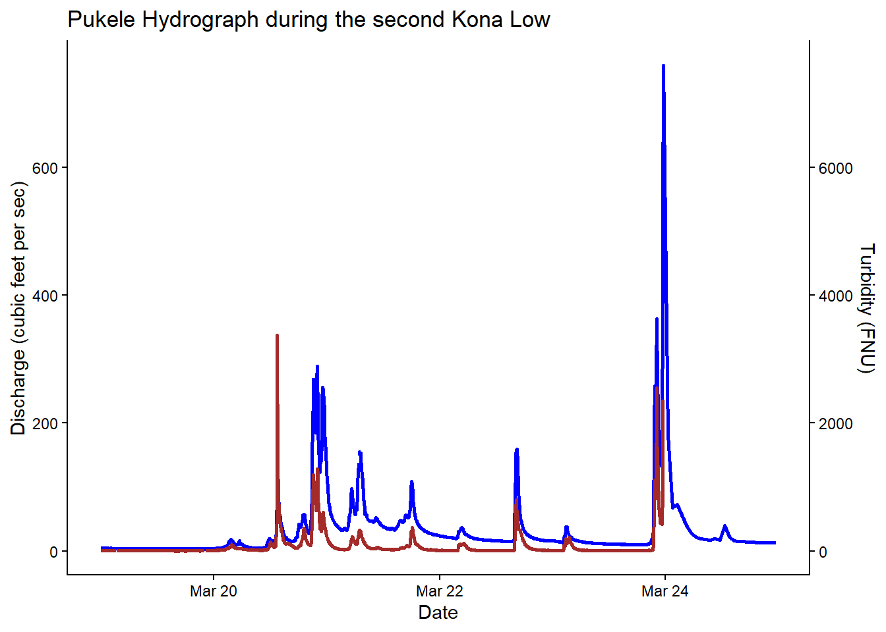
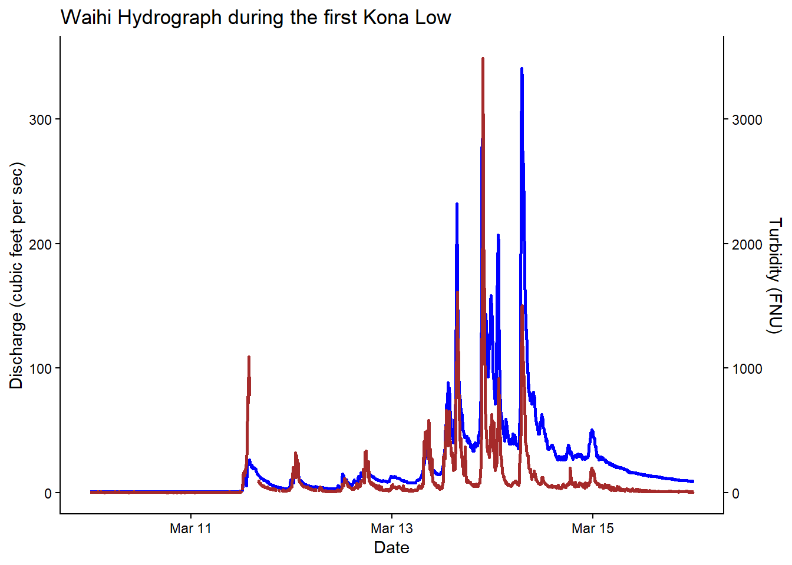
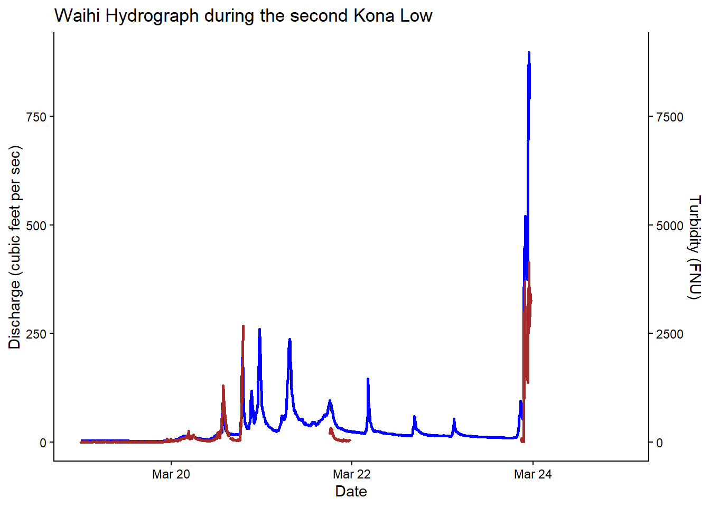

Show code
library(tidyverse)
library(here)
library(dataRetrieval) #USGS water data package1) Load libraries
library(tidyverse)
library(here)
library(dataRetrieval) #USGS water data packageFor more info about the USGS dataRetrieval package in R
2) Load data
I am pulling USGS continuous data from two stream gages in the Ala Wai watershed during both Kona Lows 1 and 2.
Pukele Stream near Honolulu, Oahu, HI - USGS-16244000
Waihi Stream at Honolulu, Oahu, HI - USGS-16238500
# USGS: Waihi and Pukele stations
Pukele <- c("USGS-16238500")
Waihi <- c("USGS-16244000")
parameterCd <- c("00065", "00060", "63680")
#00065 = gage height (ft)
#00060 = discharge (cfs)
#63680 = turbidity (FNU)
P_kona_low_1 <- read_waterdata_continuous(
monitoring_location_id = Pukele,
parameter_code = parameterCd,
time = c("2026-03-10", "2026-03-16")) |>
write_csv(here("week_08", "data", "pukele_KL_1.csv"))Requesting:
https://api.waterdata.usgs.gov/ogcapi/v0/collections/continuous/items?f=json&lang=en-US&monitoring_location_id=USGS-16238500¶meter_code=00065,00060,63680&time=2026-03-10T00%3A00%3A00Z%2F2026-03-16T00%3A00%3A00Z&skipGeometry=TRUE&limit=50000P_kona_low_2 <- read_waterdata_continuous(
monitoring_location_id = Pukele,
parameter_code = parameterCd,
time = c("2026-03-19", "2026-03-25")) |>
write_csv(here("week_08", "data", "pukele_KL_2.csv"))Requesting:
https://api.waterdata.usgs.gov/ogcapi/v0/collections/continuous/items?f=json&lang=en-US&monitoring_location_id=USGS-16238500¶meter_code=00065,00060,63680&time=2026-03-19T00%3A00%3A00Z%2F2026-03-25T00%3A00%3A00Z&skipGeometry=TRUE&limit=50000W_kona_low_1 <- read_waterdata_continuous(
monitoring_location_id = Waihi,
parameter_code = parameterCd,
time = c("2026-03-10", "2026-03-16")) |>
write_csv(here("week_08", "data", "waihi_KL_1.csv"))Requesting:
https://api.waterdata.usgs.gov/ogcapi/v0/collections/continuous/items?f=json&lang=en-US&monitoring_location_id=USGS-16244000¶meter_code=00065,00060,63680&time=2026-03-10T00%3A00%3A00Z%2F2026-03-16T00%3A00%3A00Z&skipGeometry=TRUE&limit=50000W_kona_low_2 <- read_waterdata_continuous(
monitoring_location_id = Waihi,
parameter_code = parameterCd,
time = c("2026-03-19", "2026-03-25")) |>
write_csv(here("week_08", "data", "waihi_KL_2.csv"))Requesting:
https://api.waterdata.usgs.gov/ogcapi/v0/collections/continuous/items?f=json&lang=en-US&monitoring_location_id=USGS-16244000¶meter_code=00065,00060,63680&time=2026-03-19T00%3A00%3A00Z%2F2026-03-25T00%3A00%3A00Z&skipGeometry=TRUE&limit=50000Originally, I had to pull all the continuous data (i.e. gage height, discharge, turbidity, and suspeneded sediment concentration) from all 6 USGS gaging stations that are in the Ala Wai watershed…some spanning back to late 1990’s. USGS has query limits of 3 years so I did it by three year increments and combined into one data frame at the end. Took a lot of time but I got it done, but there’s always a simpler way to do this (aka functions).
One of the functions I wanted to create is where once you pull the data (comes in long format), I want to keep certain columns, have the data in wide format, and have the parameter name instead of the parameter ID.
3) Create function #1
USGS_wide <- function(data_long) {
data_wide <- data_long |>
select(monitoring_location_id, parameter_code, time, value) |>
pivot_wider(
id_cols = c(monitoring_location_id, time),
names_from = c(parameter_code),
values_from = value,
values_fill = NA #if obs. left empty then put NA
) |>
rename(
gage_height_ft = "00065",
discharge_cfs = "00060",
turbidity_FNU = "63680"
)
return(data_wide)
}3a) Test function with Pukele site on Kona Low #1
P_KL1_wide <- USGS_wide(P_kona_low_1)
head(P_KL1_wide)# A tibble: 6 × 5
monitoring_location_id time gage_height_ft discharge_cfs
<chr> <dttm> <dbl> <dbl>
1 USGS-16238500 2026-03-10 00:00:00 1.78 1.56
2 USGS-16238500 2026-03-10 00:05:00 1.78 1.56
3 USGS-16238500 2026-03-10 00:10:00 1.78 1.56
4 USGS-16238500 2026-03-10 00:15:00 1.78 1.56
5 USGS-16238500 2026-03-10 00:20:00 1.78 1.56
6 USGS-16238500 2026-03-10 00:25:00 1.78 1.56
# ℹ 1 more variable: turbidity_FNU <dbl>3b) Test functions with Waihi site on Kona Low #1
W_KL1_wide <- USGS_wide(W_kona_low_1)
head(W_KL1_wide)# A tibble: 6 × 5
monitoring_location_id time discharge_cfs turbidity_FNU
<chr> <dttm> <dbl> <dbl>
1 USGS-16244000 2026-03-10 00:00:00 0.88 1
2 USGS-16244000 2026-03-10 00:05:00 0.88 1
3 USGS-16244000 2026-03-10 00:10:00 0.88 1
4 USGS-16244000 2026-03-10 00:15:00 0.88 1
5 USGS-16244000 2026-03-10 00:20:00 0.88 1
6 USGS-16244000 2026-03-10 00:25:00 0.88 1
# ℹ 1 more variable: gage_height_ft <dbl>4) Create function #2 - plotting
got help to create 2nd axis from: https://r-graph-gallery.com/line-chart-dual-Y-axis-ggplot2.html
hydrograph_turb <- function(data, x, y1, y2) {
coeff <- 10 #need to scale for the 2nd y-axis
ggplot(data, aes(x = {{x}})) +
geom_line(aes(y = {{y1}}), color = "blue", linewidth = 1) +
geom_line(aes(y = {{y2}}/ coeff), color = "brown", linewidth = 1) +
#double{{}} to tell R to look with the specified dataframe
scale_y_continuous(
name = "Discharge (cubic feet per sec)",
sec.axis = sec_axis(~.*coeff, name = "Turbidity (FNU)")
) +
theme_classic()
}4a) Test plot function
hydrograph_turb(data = P_KL1_wide, x = time, y1 = discharge_cfs, y2= turbidity_FNU)+
labs(
title = "Pukele Hydrograph during the first Kona Low",
x = "Date"
)
ggsave(here("week_08", "outputs", "pukele_KL1.png"))Saving 7 x 5 in image4b) Test plot function again
P_KL2_wide <- USGS_wide(P_kona_low_2)
hydrograph_turb(data= P_KL2_wide, x = time, y1 = discharge_cfs, y2= turbidity_FNU)+
labs(
title = "Pukele Hydrograph during the second Kona Low",
x = "Date"
)Warning: Removed 25 rows containing missing values or values outside the scale range
(`geom_line()`).
ggsave(here("week_08", "outputs", "pukele_KL2.png"))Saving 7 x 5 in imageWarning: Removed 25 rows containing missing values or values outside the scale range
(`geom_line()`).Just for the fun of it…let’s create hydrographs for the Waihi station
hydrograph_turb(data = W_KL1_wide, x = time, y1 = discharge_cfs, y2= turbidity_FNU)+
labs(
title = "Waihi Hydrograph during the first Kona Low",
x = "Date"
)
ggsave(here("week_08", "outputs", "waihi_KL1.png"))Saving 7 x 5 in imageW_KL2_wide <- USGS_wide(W_kona_low_2)
hydrograph_turb(data= W_KL2_wide, x = time, y1 = discharge_cfs, y2= turbidity_FNU)+
labs(
title = "Waihi Hydrograph during the second Kona Low",
x = "Date"
)Warning: Removed 54 rows containing missing values or values outside the scale range
(`geom_line()`).Warning: Removed 50 rows containing missing values or values outside the scale range
(`geom_line()`).
ggsave(here("week_08", "outputs", "waihi_KL2.png"))Saving 7 x 5 in imageWarning: Removed 54 rows containing missing values or values outside the scale range
(`geom_line()`).
Removed 50 rows containing missing values or values outside the scale range
(`geom_line()`).Unfortunately, and if I remember correctly, this site fully went down during the storm, but has been restored in the later months.